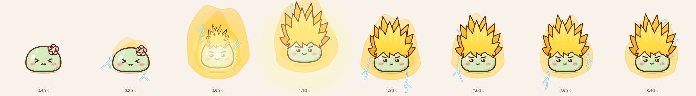
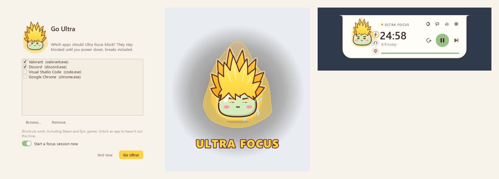
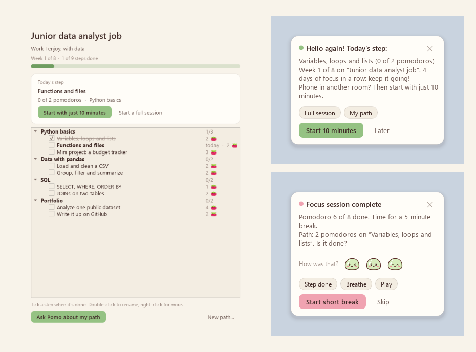

Island or orb
A slim island at the top of your screen, or a round orb you drag anywhere. One click switches.
More about the timerStarring Pomo the matcha mochi, who sits on your timer, cheers you on, takes breaks with you and keeps an eye on your coding agents.
Latest version · Windows 10 or 11 (64-bit) · free · no admin rights · portable zip

Pomo's eyes follow your cursor. Pomo looks determined while you focus, relaxes on breaks, jumps for joy when you finish, and dozes off when you wander away.


A slim island at the top of your screen, or a round orb you drag anywhere. One click switches.
More about the timer
Learns your best session length, parks stray thoughts, and shows you where you left off after a break.
More focus helpers
Real rain and café recordings on a seamless loop, and controls for whatever music you're playing.
More about sounds
Three small quests a day, badges, a sakura tree that grows, and outfits to unlock.
More about rewards
Plan your day into pomodoros with Claude, ChatGPT, Gemini or Grok, using your own key. Or just ask out loud.
More about Ask Pomo
Focus time, streaks, a consistency heatmap, your best hours and a session log with CSV export.
More about the dashboardClick the lightning button and drag in the apps that pull you away. Pomo powers up, with tall golden hair, fire in his eyes and a crackling aura, and those apps stay blocked, breaks included, until you power down.


Not sure which direction to take? Ask Pomo asks a few questions and builds your path: one goal, in small steps. You always know today's step.

Every focus hour, quest and Perfect day brings something new: a desk, plants, string lights, a trophy shelf, even a sleepy cat.

A thought bubble while they work, a "!" when one needs you, and their exact questions and messages, ready to answer from Pomo.

Your history, ratings, tasks and parked thoughts live in a folder on your PC. No account, no server, no tracking.
Ask Pomo only sends something when you ask, and only to the AI provider you picked. Keys are encrypted for your Windows account.
Every line is on GitHub, and updates are checked against GitHub's checksum before Pomo installs them.
Free for Windows 10 and 11. Pomo updates itself with one click.
Windows may say "Windows protected your PC" because the installer isn't code-signed. Click More info, then Run anyway.